Caro leitor,
Sem dúvida, você já se pegou se perguntando sobre seu próprio conhecimento e competência no mundo do futebol virtual e na análise de mercado que o cerca.
Você já ponderou sobre a nota que daria a si mesmo?
Independentemente de qual seja a sua resposta, uma coisa é absolutamente certa: quanto mais elevado for o seu nível de habilidade em análise, maior será a quantidade de dinheiro em seu bolso.
Essa relação de causa e efeito é impossível de ignorar.
A sua capacidade de aprimorar a análise é diretamente proporcional ao seu lucro.
É como um ciclo virtuoso: quanto melhor a sua análise, mais fácil fica o 'green', a sua taxa de acerto aumenta e, como resultado direto, o seu lucro se multiplica.
É uma realidade irrefutável no mundo do trading esportivo.
A maneira como você analisa o mercado pode significar a diferença entre alcançar o pódio dos vencedores ou ficar na obscuridade.
Tendo uma estratégia de análise bem estruturada, mesmo que você tenha momentos ruins, o seu público dificilmente reclamará.
Isso ocorre porque, quando a sua estratégia atinge um novo patamar, você ganha a confiança de todos.
Sem uma estratégia de análise sólida e eficiente, todo o resto do seu trabalho será prejudicado.
Sua gestão de risco, sua capacidade emocional para lidar com o mercado, sua auto-estima - tudo pode ser impactado diretamente pela qualidade da sua estratégia de análise.
Uma estratégia bem definida pode ser a linha divisória entre o crescimento e a falência, entre a consistência de vitórias e a mera tentativa de "entrar no mercado para lucrar".
E a sua hora de ter a estratégia certa para entrar no mercado para ganhar…
Quer você esteja pensando em criar uma consultoria esportiva ou operar o próprio capital, o sucesso ou fracasso no trading esportivo depende quase 90% da qualidade da estratégia de análise.
Portanto, se há uma área que todos os empresários devem acompanhar de perto, é, sem dúvida, a estratégia de análise.
Algo tão crucial e significativo para o funcionamento de uma empresa só pode ser gerido por alguém extremamente qualificado, certo?
Surpreendentemente, na maioria dos casos, ocorre exatamente o oposto.
Há muitos funcionários, consultores ou até traders que são encarregados de desenvolver estratégias de análise, mas se veem confusos e perdidos na execução.
Apesar de dedicarem inúmeras horas, lerem e investirem na área, quando chega o momento de colocar as estratégias para funcionar, eles enfrentam uma grande decepção.
Agora, eu preciso que você preste bastante atenção no que vou lhe dizer: em muitos casos, o problema não está na ESTRATÉGIA em si, mas na maneira como ela foi aplicada.

Existem estratégias que deveriam ter sido usadas em entradas secas, e não em uma sequência de martingale.
Outras estratégias necessitam que 60% das informações sejam eliminadas, usadas separadamente para alavancagem, mas com outra abordagem.
A ESTRATÉGIA DE ANÁLISE não é um jogo de "tudo ou nada".
É um jogo de otimização constante, onde a vitória é alcançada a cada dia, não em um único movimento monumental.
Já imaginou o que você faria com essa renda potencial de R$2,000 por mês?
Há uma percepção comum de que os investimentos servem apenas como uma fonte alternativa de renda ou como um fundo para proporcionar segurança futura.
Enquanto estas são metas valiosas e alcançáveis, o mercado de trading esportivo vai além.
Este mercado é complexo e diversificado, oferecendo oportunidades para aqueles dispostos a dedicar tempo e esforço em entender seus intricados mecanismos.
Existem profissionais cujas carreiras inteiras são dedicadas a identificar padrões, prever tendências e maximizar lucros.
Um aspecto interessante deste mercado é que os padrões que ocorreram no passado tendem a se repetir no futuro.
Em nosso curso, ensinamos você a reconhecer e a se beneficiar destes movimentos do mercado.
Isso o transformará em um investidor ou trader mais sábio, capaz de gerar resultados mais consistentes e positivos!
No trading esportivo, a análise não é apenas uma tarefa, mas um papel estratégico crucial.
O trader é um verdadeiro analista estratégico, capaz de reconhecer tendências e gerenciar os riscos de aplicações financeiras.
Essa habilidade requer treinamento, prática e, acima de tudo, uma mente afiada e focada.
Estamos oferecendo um treinamento de nível iniciante para aqueles que desejam entrar no mercado e começar a gerar seus primeiros ganhos.
E o melhor de tudo?
Você não precisa depender de salas de sinais, robôs e analistas de mercado.
Nosso curso fornecerá as ferramentas e o conhecimento necessários para você assumir o controle de suas operações e fazer suas próprias decisões informadas.
Essa é uma oportunidade para você aprimorar sua estratégia de análise e, consequentemente, melhorar seus resultados.
É uma chance de abandonar a sensação de estar perdido e abraçar o sentimento de controle e competência.
É a oportunidade de ser mais do que um mero participante no mercado de trading esportivo, mas um verdadeiro vencedor.
AGORA VOCÊ TAMBÉM TEM A OPORTUNIDADE DE SER UM VENCEDOR…
Já imaginou estar no controle, poder analisar cada passo do mercado, e tomar decisões embasadas em sua própria análise estratégica?
Agora, pare de imaginar.
É isso que oferecemos a você.
É importante frisar que o processo de aprendizado requer dedicação.
É preciso estar disposto a estudar, se esforçar, experimentar, errar e aprender com os erros.
O caminho para se tornar um trader de sucesso não é fácil, mas prometemos que será recompensador.
Nós acreditamos em você.
Sabemos que tem a capacidade e o potencial para alcançar um nível de análise excepcional e colher os frutos de um trading bem-sucedido.
Já pensou que gratificante será o dia em que você olhará para trás e verá o quão longe chegou?
Para te ajudar a começar, nosso curso oferece uma abordagem detalhada e aprofundada.
Ele foi cuidadosamente elaborado para conduzi-lo passo a passo, desde os conceitos básicos até as estratégias avançadas.
Ao final do curso, você terá o conhecimento necessário para elaborar sua própria estratégia de análise e tomar decisões informadas.
Ademais, nós não vamos te abandonar após o término do curso.
Estaremos ao seu lado durante todo o seu percurso, oferecendo suporte contínuo e ajudando a aprimorar suas habilidades.
Se surgirem dúvidas ou se deparar com obstáculos, estaremos prontos para te auxiliar.
APRENDA SER INDEPENDENTE DE ANALISTAS DO MERCADO FINANCEIRO!
Além disso, você fará parte de uma comunidade de traders com os quais poderá compartilhar experiências, tirar dúvidas e aprender juntos.
Nesse universo do trading, nada é mais valioso do que a experiência compartilhada.
Nós reconhecemos o valor do trading esportivo.
Sabemos como este mercado pode ser lucrativo e oferecer oportunidades incríveis.
É por isso que nos comprometemos a fornecer um treinamento de alta qualidade que o capacitará a se destacar neste universo.
Investir no trading esportivo não é somente sobre ganhar dinheiro.
É sobre empoderamento, confiança e controle.
É sobre estar em uma posição de influenciar seu próprio destino financeiro e não depender de terceiros.
Portanto, perguntamos novamente: está pronto para começar?
Além do Flow & Gain vamos te dar de bônus:
Mentoria - Flow & Gain ;
Trend Expert– Curso de estratégias de padrões;
Sala de sinais: Jota Tips ;
Bônus Exclusivo: Live Quinzenal
Tudo isso por um valor especial
de apenas 12x de
R$114,88
Cartões de Crédito
Transferência e Boleto
Sim, você está ganhando acesso a estratégia que usamos para operar em live por apenas R$115.
E se você observar por um segundo:
Você vai notar que com uma única semana você operando, o valor do pacote completo já estaria pago.
Por que estamos fazendo isso?
Simples: Ainda estamos em fase de gravação das aulas do nosso treinamento.
E esta é a 1ª turma da História do programa – da História da Jota Investimentos.
Naturalmente, visamos precificar em breve o Renda em Dólar em cerca de R$ 3.997 ou R$ 4.997.
Acreditamos que por todo o valor que estamos proporcionando em encontro , Listas de Recomendações, salários de analistas, estrutura de suporte, acesso à assinatura premium e, claro, toda a estratégia que convertida pode equivaler a milhares de reais por semana – esse preço de R$ 4.997 por ano seria algo justo.
Mas visto que esta é a 1ª turma do programa, e visando presentear os primeiros investidores e clientes que nos derem seu voto de confiança, decidimos empacotar num preço mais acessível nesta inauguração.
Principalmente, se você já for cliente da Jota Investimentos.
Preparamos uma condição ainda mais exclusiva para você que já possui acesso a nossa sala de sinais.
Basta clicar no botão abaixo para conferir.
E, claro, aqui está sua garantia:
Além do preço especial de inauguração, também estamos dando uma garantia incondicional a você.
Porque, até aqui, eu prometi a você uma coisa:
Como buscar uma renda semanal apertando apenas alguns poucos botões no seu teclado – e eu garanto a você que é exatamente essa a estratégia: alguns botões no seu teclado e uma renda extra imediata no seu bolso a cada 7 dias.
Por isso, aqui está nossa garantia incondicional e vitalícia a você:
Se você decidir se juntar a Jota Investimentosno programa Flow & Gain e seguir o passo a passo que vou colocar em suas mãos… e não conseguir colocar pagamentos em dólar imediatos no seu bolso… apertando apenas alguns botões no seu teclado… nós vamos devolver 100% do seu dinheiro.
Ou seja: é só enviar um e-mail pra mim provando que você seguiu o passo a passo que eu vou te dar.
E se você não colocar dólares no seu bolso imediatamente… no exato instante que você apertar os botões que eu te mostrar… nós, da Jota Investimentos, devolveremos cada centavo que você usar no dia de hoje (100% do seu dinheiro de volta).
Essa é uma garantia vitalícia. Pro resto da sua vida. A qualquer momento a partir de hoje.
Como eu disse: é impossível você não ganhar uma renda semanal se seguir o gerenciamento e as nossas estratégias– e não estou dizendo apenas da boca pra fora.
Eu e a Jota Investimentos estamos garantindo contratualmente que, se você seguir à risca o passo a passo que vamos te dar, e você não ser lucrativo, devolveremos todo o seu dinheiro de hoje.
Parece justo?
Parece razoável? Parece uma boa proposta pra você?
Bom, esta é a oferta que a Jota Investimentos está colocando na mesa pra você.
Esta é minha proposta pra você:
Mentoria – Flow & Gain;
Trend Expert– Curso de estratégias de padrões;;
Sala de sinais - Jota tips;
Bônus Exclusivo: Live quinzenal
Da sua parte, um comprometimento pequeno em si mesmo – de apenas R$115 por mês.
Análises semanais para ver o método sendo colocado em prática ao vivo.
Atualização constante das estratégias.
Alguns dos melhores especialistas em trader esportivo do Brasil.
Seja certificado pela maior escola de trader esportivo do mundo e a única a poder emitir certificado no Brasil.
A sua liberdade financeira inicia hoje.
Todas as provas tão aí.
Todo o acompanhamento profissional tá aí.
Toda a garantia vitalícia da Jotacom você tá aí.
Pelo menos, se dê a chance de buscar R$ 10, R$ 100, R$ 1000 já nas próximas semanas!
Da minha parte, é tudo que posso fazer por você. Agora é contigo.
Não deixe essa oportunidade histórica escapar por entre seus dedos.
Basta clicar no botão abaixo.
Assim que você fizer isso, você será direcionado automaticamente para a página oficial da Jota Investimentos.
É uma página simples e totalmente segura, onde você poderá destravar seu acesso ao Flow & Gain.
Você poderá checar todos os seus dados, antes de finalizar seu cadastro. Combinado?
Essa página ficará disponível por tempo limitado.
Caso você clique no botão abaixo e não consiga acessar, significa que retiramos o link do ar ou batemos o número máximo de alunos para esta 1ª turma do programa Flow & Gain.
Por isso, não perca tempo:
Se você se interessou pela proposta, te convido a destravar sua vaga imediatamente.
Lembre-se: não estou pedindo que dê um salto de fé ou tome uma decisão definitiva agora.
Só o que estou pedindo é que dê uma olhada dentro do programa – e teste com seus próprios olhos e mãos.
Como disse a você, você está recebendo uma garantia vitalícia com todos os termos que comentei.
Enfim, é tudo que posso fazer por você. Agora é contigo.
Clique no botão abaixo para destravar seu acesso ao pacote premium completo;
Junte-se aos mais de 30 mil alunos da Jota Investimentos;
E agarre a chance de mudar pra sempre a sua vida financeira com uma acesse o Flow & Gain.
(Você poderá rever todos os seus dados, antes de finalizar o cadastro)